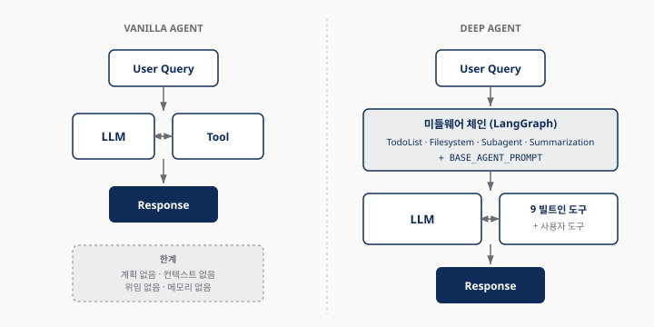
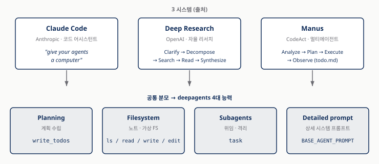
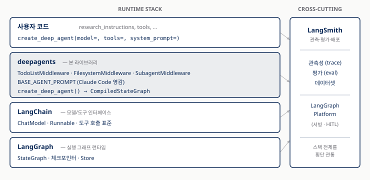
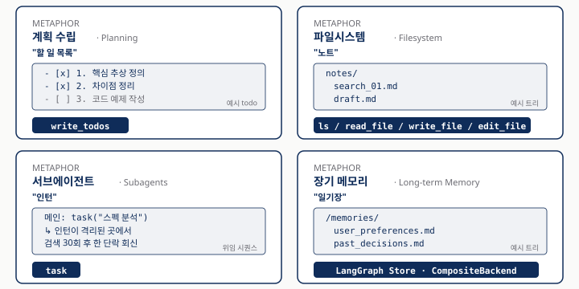
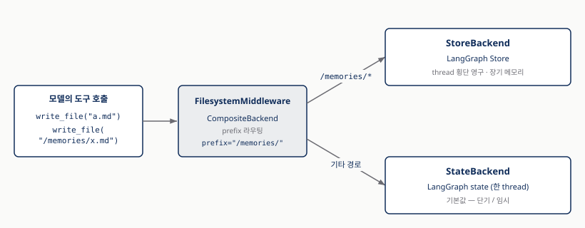
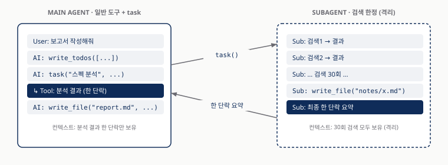
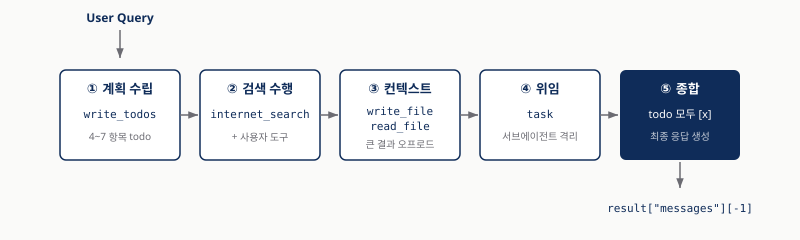
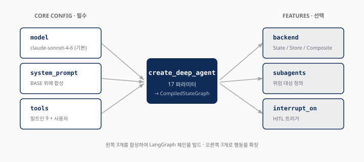
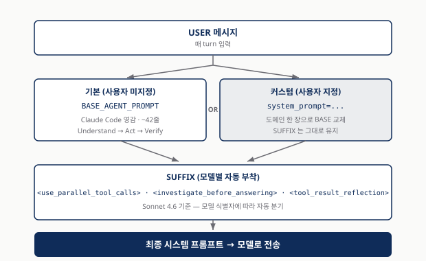

Deep Agents 첫 걸음
4주짜리 스터디의 공통 지도 한 장 — Overview · Quickstart · Customization
Vanilla 에이전트가 깨지는 세 지점
「LLM 한 번 + 도구 몇 개 + while 루프」 — 짧은 작업엔 충분하지만 단계가 많아지면 무너진다
| 깨지는 지점 | 무엇이 일어나는가 |
|---|---|
| 컨텍스트 오버플로 | 검색 결과·문서·이력이 누적돼 컨텍스트 윈도우를 잡아먹는다 |
| 계획의 부재 | 모델이 "다음 단계" 를 매 턴 즉흥으로 결정 — 길을 잃는다 |
| 위임 불가 | 한 모델이 모든 컨텍스트를 들고 있어 무거운 하위 작업이 메인을 오염시킨다 |
5단계까지는 견디지만 50단계에서는 무너진다 — 외부화·명시화·격리할 자리가 없기 때문.
같은 입력, 두 흐름
Vanilla vs Deep Agent — 미들웨어 한 켜가 만드는 차이

미들웨어 체인이 매 turn (1) 계획 갱신, (2) 컨텍스트 오프로드, (3) 위임을 자동으로 끼워 넣는다.
폐쇄 시스템 셋이 같은 답을 발견
Claude Code · OpenAI Deep Research · Manus — 출시 주체도 구현도 다른데 같은 패턴
| 시스템 | 핵심 메커니즘 |
|---|---|
| Claude Code (Anthropic) | 파일시스템 · 서브에이전트 · 컴팩션 — "give your agents a computer" |
| OpenAI Deep Research | 5단계: Clarify → Decompose → Search → Read → Synthesis. 한 작업당 검색 30~60회 |
| Manus | CodeAct (Python 스크립트) + todo.md + 격리된 서브에이전트 |
셋 모두 계획 파일 + 가상 파일시스템 + 서브에이전트 라는 같은 세 축으로 수렴.
네 축으로의 수렴
Planning · Filesystem · Subagents · Detailed Prompt — 라이브러리화의 청사진

Harrison Chase 의 정리 — "Deep agents are agents that perform planning, use sub agents, have access to a file system, and have a detailed prompt."
deepagents 의 스택 위치
LangGraph 그대로 깔고 그 위에 미들웨어 한 켜 — 새 프레임워크가 아니다

create_deep_agent()의 반환은 LangGraphCompiledStateGraph— 기존 LangSmith · Platform · 체크포인터 · Store 가 그대로 재활용된다.
비서의 4가지 — 할 일·노트·인턴·일기장
잘 갖춰진 비서에게 4종의 도구를 쥐여 준다

각 능력은 독립된 미들웨어 — 켜고 끄거나 다른 패턴으로 갈아 끼울 수 있다.
Planning — `write_todos` 의 no-op 트릭
모델이 자기 계획을 파일로 적어놓고 그 파일을 보며 일한다
- [x] 1. langgraph 의 핵심 추상 4가지 정의
- [x] 2. 각 추상이 LangChain 과 어떻게 다른지 정리
- [ ] 3. 코드 예제로 StateGraph + Send 패턴 시연
- [ ] 4. 보고서 초안 작성
- 호출 효과 — state
todos슬롯에 텍스트만 박힘. 시스템 어디에도 물리적 변화 없음 - 다음 turn — 그
todos가 시스템 프롬프트에 자동 재합성 - 결과 — 매 turn 자기 계획을 다시 마주 보는 모델
도구 자체는 no-op — 다음 turn 시스템 프롬프트에 todo 가 다시 들어가 모델이 계획을 잊지 않게 하는 컨텍스트 엔지니어링 트릭.
Filesystem — 같은 도구, 다른 저장소
큰 검색 결과·중간 산출물을 모델 컨텍스트에서 빼서 가상 파일시스템에 적어둔다

도구 4종 —
ls·read_file·write_file·edit_file./memories/prefix 는 Store 로, 나머지는 State 로 라우팅 — 모델 입장에선 추상이 일관된다.
Subagents — `task` 한 줄로 컨텍스트 격리
무거운 하위 작업은 격리된 서브에이전트에 위임 — 메인 컨텍스트가 깨끗해진다

격리되는 것은 둘 — (1) 컨텍스트 (서브에이전트 자체 메시지 히스토리), (2) 권한 (서브에이전트별 도구 풀).
장기 메모리 — Store 라우팅
대화/스레드를 넘어 살아남는 기억은 LangGraph Store 가 맡는다
| 계층 | 수명 | deepagents 매핑 |
|---|---|---|
| Checkpointer | 한 thread (한 대화) | 단기 메모리 |
| Store | 모든 thread 가 공유 | 장기 메모리 |
backend = CompositeBackend(prefix="/memories/", store=..., state=...)
모델은 같은 도구 (
write_file·read_file) 로 단기·장기 메모리를 다룬다 — 차이는 경로뿐.
Quickstart 핵심 5줄
코어는 정말로 다섯 줄 — 빌트인 도구 9종이 자동으로 매달린다
from langchain.chat_models import init_chat_model
from deepagents import create_deep_agent
from tavily import TavilyClient
tavily = TavilyClient(api_key=os.environ["TAVILY_API_KEY"])
def internet_search(query: str, max_results: int = 5) -> dict:
"""Run a web search"""
return tavily.search(query, max_results=max_results)
agent = create_deep_agent(
model=init_chat_model("openai:gpt-4o-mini"),
tools=[internet_search],
system_prompt="You are an expert researcher.",
)
반환은 LangGraph
CompiledStateGraph—.invoke/.stream/.ainvoke모두 동작. 빌트인 9종 자동 매달림:write_todos·ls·read_file·write_file·edit_file·glob·grep·task·execute(sandbox 백엔드 필요).
`agent.invoke()` 백그라운드 5단계
한 줄 호출 뒤에서 일어나는 일 — todo → tool → file → task → synth

다섯 단계가 한 turn 안에 모두 일어나는 것이 아니라, 여러 turn 에 걸쳐 미들웨어 체인이 매번 같은 순서로 돈다.
미들웨어 체인 7층 — 모델은 모른다
모델은 도구가 거기 있다고 인식할 뿐, 미들웨어 자체는 보이지 않는다
- TodoListMiddleware — 계획 갱신
- SkillsMiddleware —
skills=인자가 있을 때 - FilesystemMiddleware — 오프로드 / 로드
- SubAgentMiddleware — 선언형 서브에이전트
- SummarizationMiddleware — 필요 시 컨텍스트 압축
- PatchToolCallsMiddleware
- AsyncSubAgentMiddleware — async 서브에이전트
이 투명성이 deepagents 가 LangGraph 의 "직접 짠 워크플로" 와 다른 결정적 지점.
Core Config 세 다이얼 + Features 셋
17개 파라미터 중 첫 90%는 model · system_prompt · tools 만 만진다

Features (
backend·subagents·interrupt_on) 는 켜고 끄는 옵션 — 이 글에선 이름만 알아두고 디테일은 별도.
Model 바꾸기 — 문자열 vs 객체
길 1 은 빠르게, 길 2 는 정밀하게
# 길 1 — provider:model 문자열 (디폴트 경로)
model = init_chat_model("openai:gpt-4o-mini")
agent = create_deep_agent(model=model)
# 길 2 — LangChain 객체 (Ollama / Bedrock / temperature 같은 디테일)
model = init_chat_model(
model="llama3.1",
model_provider="ollama",
temperature=0,
)
agent = create_deep_agent(model=model)
OPENAI_BASE_URL만 갈아 끼우면 OpenAI · 사내 프록시 · Bedrock 호환 프록시 모두에서 동일 코드가 작동.
시스템 프롬프트 3단 합성
사용자 한 장은 BASE 를 교체하지 않는다 — 그 앞 (USER 자리) 에 prepend 된다

USER → BASE(또는 CUSTOM) → SUFFIX. Understand → Act → Verify 워크플로와 모델별 SUFFIX 가 사용자 커스텀에 의해 지워지지 않는 이유.
결정 표 — `create_agent` / LangGraph / `create_deep_agent`
"단계 5+ · 컨텍스트 윈도우 절반+ · 위임 가능" 셋이 동시에 참이면 deep agent
| 상황 | 추천 | 이유 |
|---|---|---|
| 짧은 Q&A, 단일 도구 호출 | create_agent |
미들웨어 오버헤드 없이 가볍게 |
| 복잡한 다단계 + 큰 컨텍스트 + 위임 | create_deep_agent |
4대 능력 자동 ON, BASE 프롬프트 검증됨 |
| 흐름 결정적이고 노드 통제 필요 | LangGraph workflow | StateGraph 로 명시 모델링 |
| 짧은 작업 + 도구 정책 까다로움 | create_agent + 미들웨어 직접 조립 |
create_deep_agent 의 부분집합 |
셋 중 하나만 참이면 다른 길을 검토 — deep agent 는 만능이 아니다.
감사합니다
지도 한 장, 같이 들고 갑니다
청사진 · 결정
99_references.md